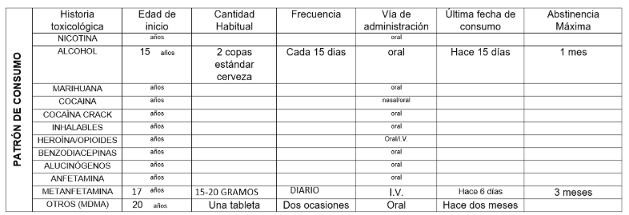
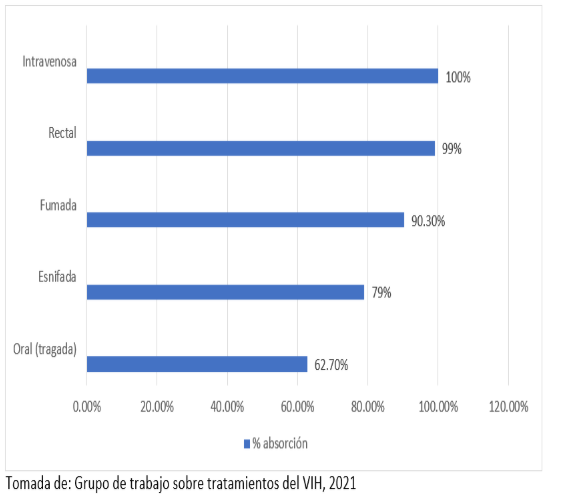

"Mis padres me trajeron, ya no quiero seguir consumiendo cristal y están preocupados
| Edad: | 20 años |
|---|---|
| Ejercito de reserva: | 110/65 mmHg |
| FC: | 72 lpm |
| Delaware: | 18 rpm |
| Temperatura: | 36,2°C |
| Peso: | 65 kg |
| Talla: | 168 cm |
| Alergias: | Ninguna |
Persona con VIH desde julio de 2021, actualmente en tratamiento con Biktarvy (bictegravir 50 mg, emtricitabina 200 mg, tenofovir 25 mg) una tableta diaria. Menciona que el último análisis de carga viral fue hace unos meses, con carga indetectable.
Presentó viruela símica hace dos meses, con resolución sin complicaciones médicas

Instrucciones: A continuación, se presenta una entrevista. En la parte inferior se mostrará el texto correspondiente a la pregunta realizada del paciente. Después de leerlo, utiliza el botón Continuar para avanzar y escuchar las siguientes respuestas. Si deseas volver a la pregunta anterior, presiona el botón Regresar.
Derivado de la entrevista anterior, ¿Cuál es el diagnóstico del paciente?
¿Qué otros diagnósticos tiene el paciente?
Considerando que la evidencia actual es débil y no hay pautas específicas de tratamiento, ¿Qué tratamiento farmacológico implementaría?
Si el paciente tuvo efectos colaterales severos por el primer tratamiento, ¿Qué otra opción farmacológica hay?
En la siguiente tabla, se muestra el porcentaje de absorción de metanfetaminas según la vía de administración.

La evaluación del consumo y las consecuencias de estos son los elementos fundamentales para elaborar un diagnóstico. La información confiable sobre todos los aspectos del uso de metanfetaminas debe incluir:
El abordaje con evidencia más robusta son las intervenciones psicosociales, incluida la terapia cognitivo-conductual, manejo de contingencias o entrevista motivacional. Actualmente no hay pautas específicas o fundamentales para el tratamiento farmacológico de la dependencia a metanfetaminas ya que la evidencia disponible consiste en estudios pequeños y con evidencia débil. Sin embargo, hay algunos medicamentos que han demostrado cierta evidencia de respuesta, disminuyendo el craving y/o reduciendo la frecuencia de consumo (Grigg, Manning, Arunogiri, & Volpe, 2018)
| Medicamento y dosis | Efectos observador | Mecanismos de acción | Efectos colaterales |
|---|---|---|---|
| Topiramato 200-400 mg/día (inicio gradual) | Cierta evidencia de reducción en el uso y el craving. | Aumenta la actividad GABA y antagoniza la actividad glutamatérgica. | Pérdida de peso, sedación, parestesias, percepción del gusto, disfunción cognitiva y efectos en memoria a corto plazo, nefrolitiasis. |
| Metilfenidato de liberación prolongada Dosis inicial: 18 mg/día Dosis óptima: 54 mg/día | Cierta evidencia de reducción en la frecuencia de uso y el craving. Ligera mejoría en el apego al tratamiento. | Actúa como terapia agonista al aumentar la acción noradrenérgica y dopaminérgica. | Insomnio, cefalea, nerviosismo, temblores, anorexia, pérdida de peso. |
| Naltrexona 50-200 mg/día | Cierta disminución del craving y mejora el apego al tratamiento. | Antagonista competitivo puro de receptores opiáceos, disminuyendo los efectos en los sistemas de recompensa. | A largo plazo puede provocar disforia, anhedonia y síntomas depresivos. |
Tras algunos estudios, se ha determinado que los siguientes medicamentos no cuentan con efectos significativos en el tratamiento de la dependencia a metanfetaminas (Siefried, Acheson, Lintzeris, & Ezard, 2020):
Grigg, J., Manning, V., Arunogiri, S. y Volpe, I. (2018). Pautas de metanfetamina. Punto de inflexión Tratamiento, Investigación, Educación.
Grupo de trabajo sobre tratamientos del VIH. (2021). golpeando Guía para la reducción de daños asociados al uso de drogas inyectables en las sesiones de sexo. (2a ed.). (J. Hernández, Ed.) Barcelona. Obtenido de https://www.sidastudi.org/resources/inmagic-img/DD78905.pdf Siefried, k., Acheson, L., Lintzeris, N., & Ezard, N. (2020).
Tratamiento farmacológico de la dependencia de metanfetamina/anfetamina: una revisión sistemática. Farmacos del SNC, 337-365.
Intentalo de nuevo